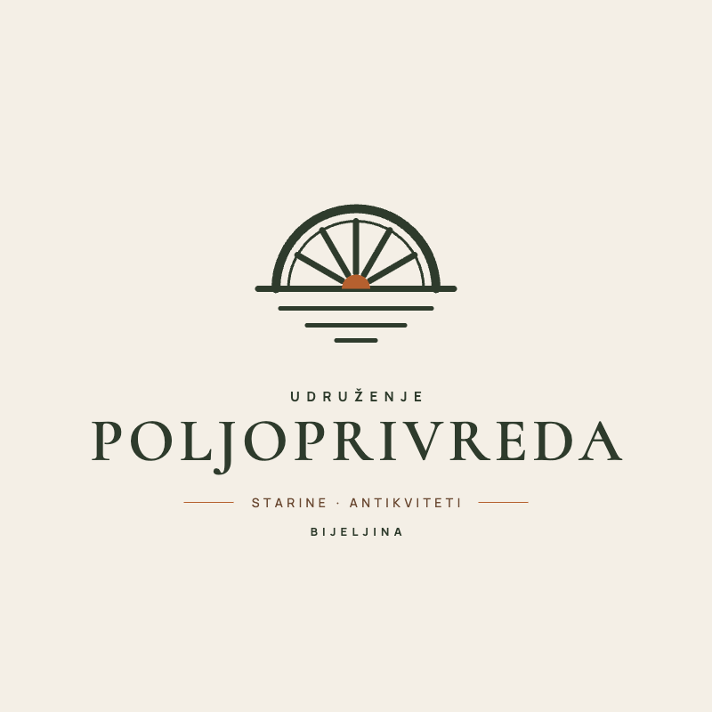

O udruženju
Udruženje poljoprivrednih proizvođača koje okuplja 14 članova i čuva zbirku od preko 30.000 eksponata, sa više od 1.000 autentičnih etno artefakata iz Semberije i šireg regiona.
- 2007. godina osnivanja
- 14 posvećenih članova
- 30.000+ eksponata u zbirci

Čuvamo svjedoke prošlih vremena
Udruženje poljoprivrednih proizvođača "Poljoprivreda" sa sjedištem u Bijeljini osnovano je 2007. godine. Naša zajednica okuplja 14 posvećenih članova koji već skoro tri decenije sakupljaju i čuvaju predmete, priče i uspomene iz života u Bosansko-hercegovačkim selima, spasavajući od zaborava dragocjene svjedoke prošlih vremena. Kroz višedecenijski rad i terenski sakupljački trud, stvorili smo impresivnu i bogatu zbirku koja danas broji preko 30.000 eksponata. U kolekciji se nalazi veliki broj starih mašina, alata, oruđa i predmeta koji su vezani za obradu zemlje. Očuvanje starih zanata, rukotvorina i proizvoda iz zanatskih djelatnosti koji su važni za selo, takođe se nalaze u ovoj kolekciji. Naš cilj je očuvanje identiteta, tradicije i kulturnog nasljeđa područja stare Jugoslavije, a prvenstveno sa područja naših sela, te njihovo prenošenje na buduće generacije.